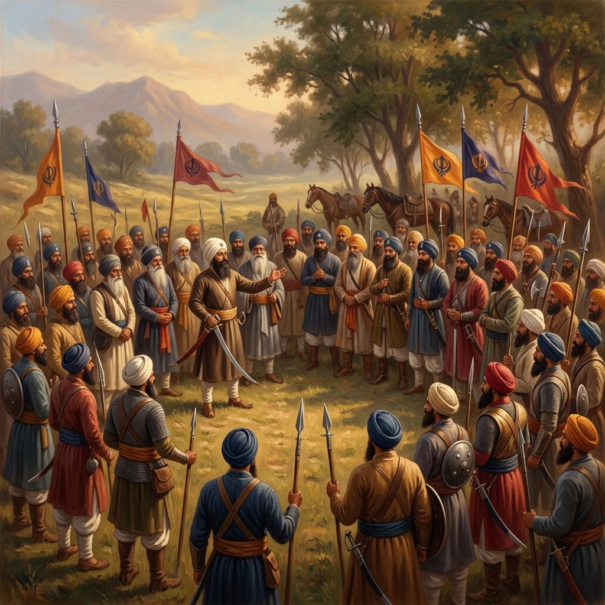

खालसा का संगठन और चरित्र


शीर्षक: Organisation and Character of the Khalsa
श्रेणी: Organisation and Character of the Khalsa
कलाकार: सिख रेजिमेंटal Centre
वर्ष: ऐतिहासिक
श्रेणी: Organisation and Character of the Khalsa
कलाकार: सिख रेजिमेंटal Centre
वर्ष: ऐतिहासिक
खालसा का संगठन और चरित्र
खालसा का गठन लोकतांत्रिक सिद्धांतों पर किया गया था। व्यक्तिगत सिख प्राथमिक इकाई का गठन करता था और योग्य होने पर, सेना या मंडली का नेतृत्व कर सकता था। पांच दीक्षित सिखों ने सामाजिक मामलों में एक पंचायत और सैन्य मामलों में एक फौज का गठन किया। उनके ऊपर सरबत खालसा, महासभा और सर्वोच्च प्राधिकारी थे, जहाँ बपतिस्मा प्राप्त सिख स्वतंत्र रूप से बोल सकते थे। इसके निर्णय, जो आम तौर पर सर्वसम्मति से होते थे, गुरुमत बन जाते थे और गुरु की सलाह के रूप में स्वीकार किए जाते थे। खालसा सेना समाज के सभी वर्गों से ली गई एक स्वयंसेवी लोगों की सेना थी। नामांकन के बाद जाति और पूर्व स्थिति का महत्व कम हो गया; नेतृत्व साहस, योग्यता, संगठन क्षमता और सेवा पर निर्भर करता था। अनुशासन आंतरिक विश्वास, धर्म के प्रति समर्पण और सामूहिक नियति में विश्वास से उत्पन्न हुआ। चारहदी कला, अंतिम जीत में उत्साहपूर्ण आत्मविश्वास, निरंतर मनोबल। सिख सैनिक सख्त नैतिक संहिता का भी पालन करते थे, क्रूरता से बचते थे, महिलाओं की रक्षा करते थे और असहाय दुश्मनों या भगोड़ों को मारने से इनकार करते थे।
खालसा का गठन लोकतांत्रिक सिद्धांतों पर किया गया था। व्यक्तिगत सिख प्राथमिक इकाई का गठन करता था और योग्य होने पर, सेना या मंडली का नेतृत्व कर सकता था। पांच दीक्षित सिखों ने सामाजिक मामलों में एक पंचायत और सैन्य मामलों में एक फौज का गठन किया। उनके ऊपर सरबत खालसा, महासभा और सर्वोच्च प्राधिकारी थे, जहाँ बपतिस्मा प्राप्त सिख स्वतंत्र रूप से बोल सकते थे। इसके निर्णय, जो आम तौर पर सर्वसम्मति से होते थे, गुरुमत बन जाते थे और गुरु की सलाह के रूप में स्वीकार किए जाते थे। खालसा सेना समाज के सभी वर्गों से ली गई एक स्वयंसेवी लोगों की सेना थी। नामांकन के बाद जाति और पूर्व स्थिति का महत्व कम हो गया; नेतृत्व साहस, योग्यता, संगठन क्षमता और सेवा पर निर्भर करता था। अनुशासन आंतरिक विश्वास, धर्म के प्रति समर्पण और सामूहिक नियति में विश्वास से उत्पन्न हुआ। चारहदी कला, अंतिम जीत में उत्साहपूर्ण आत्मविश्वास, निरंतर मनोबल। सिख सैनिक सख्त नैतिक संहिता का भी पालन करते थे, क्रूरता से बचते थे, महिलाओं की रक्षा करते थे और असहाय दुश्मनों या भगोड़ों को मारने से इनकार करते थे।
मोबाइल पर खोलें
अपने फोन पर इस कलाकृति को देखने के लिए स्कैन करें।